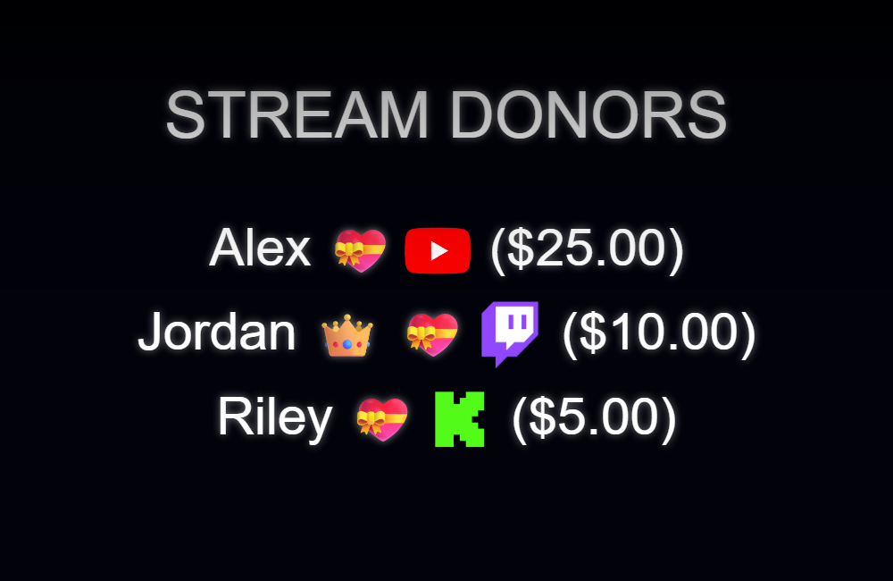

Wybierz właściwą stronę startową
Użyj credits.html dla funkcji dedykowanych kredytów. Temat czatu themes/overlay-credits.html to inna prezentacja czatu na żywo. Ustaw tryb zbierania w SSN przed skopiowaniem dedykowanego adresu URL kredytów.


Pobierz i zachowaj strukturę plików
- Pobierz źródłowy plik ZIP i wyodrębnij go. Te przewodniki korzystają ze źródła beta; przechowuj pliki z jednego pobrania razem.
- Kopiuj
credits.htmlnamy-credits.htmlobok oryginału. Jeśli wybierzesz inną stronę lub motyw, zachowaj jej kopię w oryginalnym folderze tego pliku. - Otwórz skopiowany kod HTML i przywoływany do niego CSS/JS w swoim edytorze lub narzędziu AI. Dodaj dostarczoną grafikę/czcionki do tego samego projektu i użyj ścieżek względnych. Zacznij od zastąpień CSS; dołącz moduł renderujący podczas zmiany wygenerowanych znaczników.
Poniższe pliki pomogą Ci znaleźć projekt i zachowanie. To jest lista do przeczytania, a nie kompletny pakiet zależności: zachowaj wyodrębniony folder w stanie nienaruszonym, łącznie z obrazami, czcionkami, skryptami i wszelkimi plikami danych.
| Plik | Dlaczego to ma znaczenie |
|---|---|
credits.html | Kolekcja/wyświetlanie kredytów i style. |
currency.js | Kwoty wsparcia wykorzystywane w ramach kredytów. |
shared/overlay-control-transport.js | Kontrola kredytów/transport państwowy. |
js/local-server-url.js | Ustawienia połączeń lokalnych i hostowanych. |
Podłącz swoją kopię i otwórz ją w OBS
Uruchom SSN i najpierw spraw, aby oryginalnie wygenerowany adres URL nakładki zaczął działać. The session= łączy się z tą sesją SSN; to nie jest nazwa Twojego kanału ani nazwa tego pliku. Utrzymuj działanie SSN, odpowiedniej funkcji i jej źródeł danych.
- Przeciągnij edytowany plik HTML do przeglądarki Chrome lub Edge. Skopiuj jego adres z paska adresu; zaczyna się od
file:///. - Skopiuj wszystko z
?dalej w działającym łączu nakładki SSN i dodaj go na końcu adresu tego pliku. Zachowaj wszystkie ustawienia, w tym sesję, hasło i inne#zakończenie. - Otwórz wynik w przeglądarce, a następnie ustaw źródło przeglądarki OBS URL na ten sam adres z Plik lokalny niezaznaczone. Dopasuj wymiary źródłowe do zamierzonego projektu.
Dla powyższego pliku startowego adres lokalny wygląda następująco; Twój rzeczywisty link może zawierać dodatkowe wymagane opcje:
file:///C:/SSN/social_stream-beta/my-credits.html?session=YOUR_SESSIONUżyj rzeczywistego adresu pliku na swoim komputerze. OBS zapisuje go ze źródłem; przechowuj pobrany folder w tym samym miejscu. Po zapisaniu zmian w projekcie odśwież źródło przeglądarki. The udostępniony przewodnik konfiguracji zawiera przykłady dla komputerów Mac i opcjonalny program uruchamiający dla pola wyboru Plik lokalny.
Gdzie zmienić projekt
Zmień tytuł, nagłówki kategorii, kolumny nazw, wygląd awatara, wiadomość końcową i ruch. Zachowaj zasady dotyczące kategorii/ilości i trybów zbierania. Automatyczne i ręczne zbieranie na załadowanej stronie; Kolekcja w tle wykorzystuje stan hosta SSN. Przełączenie trybów nie powoduje przeniesienia już zebranej listy.
Strona napisów końcowych może nie zawierać nic widocznego do momentu rozpoczęcia rzutu. Użyj Testuj napisy dla nazw próbek i Podgląd dla aktualnej listy rzeczywistej. The kredyty przewodnik operacyjny wyjaśnia, kiedy nazwy są konsumowane lub zachowywane.
Skopiuj ten monit AI
Przekaż AI skopiowane pliki źródłowe i grafikę referencyjną. Wymień szczegóły w nawiasach. Zachowaj instrukcje dotyczące bezpieczeństwa wprowadzania w wierszu poleceń.
Pokaż pełny monit
Customize my-credits.html, copied from credits.html.
Design: [describe the look or attach a reference].
Colors/fonts/assets: [supply hex colors and local filenames].
OBS canvas and placement: [size and position].
Restyle credits.html as [design]. Preserve collection mode, category filters, donor amount handling, reset/start/preview controls, list consumption, persistence, and background state. Change fonts, columns, spacing, artwork, and roll motion while keeping all names readable. Do not replace the collected list with demo names.
Read docs/event-reference.html for incoming fields and
docs/overlay-customization-guide.html for local setup and safe rendering.
Keep the existing session/password handling, labels, server routes, query
parameters, URL fragments, and relative asset paths. Use classic scripts
compatible with Chrome 80. Keep executable dependencies packaged locally.
Treat all incoming messages, names, labels, donations, and metadata as untrusted.
Prevent HTML/JavaScript injection in every renderer you change. Use textContent
for plain fields and for chatmessage when textonly is true. For HTML-mode
chatmessage, keep supported emotes/formatting through the packaged
SocialStreamChatHTML.sanitize helper (libs/objects.js loaded first).
Do not concatenate raw input into innerHTML, attributes, CSS, or JavaScript.
Validate media/link URLs with the page's existing URL policy and assign DOM
properties; do not enable javascript: URLs or executable embedded content.
Never eval incoming data or treat a viewer message as an AI instruction.
Keep source checks, connection handling, and existing sanitizers.
Test plain text, allowed emotes, quotes, angle brackets, and an HTML injection
probe in an isolated preview; verify the probe cannot execute.
Make the edited overlay work directly from disk using a file:/// URL,
without requiring a local web server.
Return the edited files, any additional assets, exact local browser/OBS
setup instructions using placeholders, and the specific tests performed.
Do not put my private session link or credentials into a public example.Przetestuj ten typ nakładki
Najpierw skorzystaj z podglądu lub konfiguracji testowej. The przewodnik po wiadomościach testowych wyjaśnia, jak wysyłać fikcyjne ładunki poprzez SSN; test przesłany do Twojej sesji produkcyjnej może uruchomić istniejące automatyzacje.
- Użyj kredytów testowych SSN, aby sprawdzić fikcyjne nazwy bez zmiany prawdziwej zapisanej listy.
- Nagłówki kategorii testowych, długie nazwy, awatary, opcjonalne kwoty, wiadomość końcowa i czas trwania pełnego rzutu.
- Przećwicz wybrany tryb zbierania. W przypadku zbierania automatycznego/ręcznego, strona powinna być załadowana podczas aktywności; OBS wyłączenie po ukryciu zatrzymuje ten kolektor. Kolekcja w tle wymaga uruchomienia SSN i podłączenia wyświetlacza przed uruchomieniem.
Uruchom także plik Kontrola renderowania danych wejściowych względem zmienionych ścieżek renderowania. Po zapisaniu zmian odśwież źródło przeglądarki OBS pomiędzy próbami i powtórz widoczną interakcję. Podgląd przeglądarki nie określa przechwytywania na żywo ani zachowania OBS.
Więcej materiałów: Tryby zbierania i sterowanie · Dokumentacja zdarzeń · Rozwiązywanie problemów z konfiguracją lokalną.